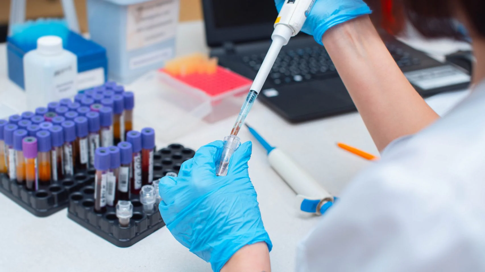

Tu salud merece atención
precisa y oportuna
Diagnósticos certeros con tecnología de vanguardia y calidez humana. Visítanos en Consultorios el Batán y obtén resultados confiables.

Comprometidos con tu bienestar y resultados exactos
En Laboratorio clínico Accu-Lab, entendemos que detrás de cada muestra hay una persona que busca respuestas. Nos especializamos en brindar diagnósticos certeros con la máxima confidencialidad y rapidez.
Calidez Humana
Atención personalizada y amable en cada visita.
Tecnología Avanzada
Equipos modernos que garantizan total precisión.
Tu salud en 3 pasos
Agenda o Visítanos
Escríbenos por WhatsApp o ven directamente a nuestros consultorios en El Batán.
Toma de Muestra
Realizada por personal experto empleando procesos rápidos para tu mayor comodidad.
Resultados
Recibe tus diagnósticos de forma totalmente segura por WhatsApp y/o correo electrónico.